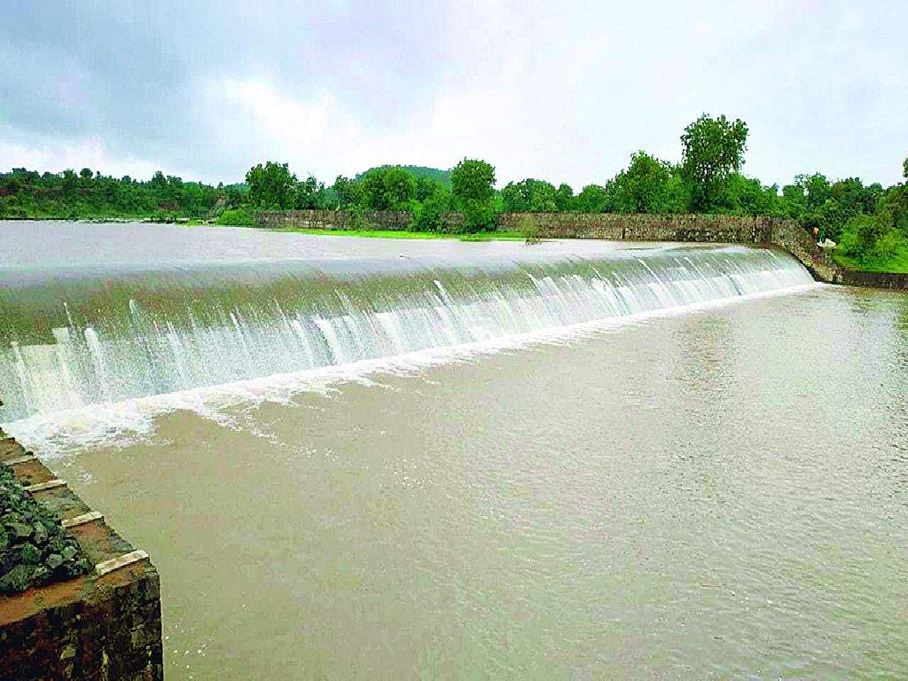
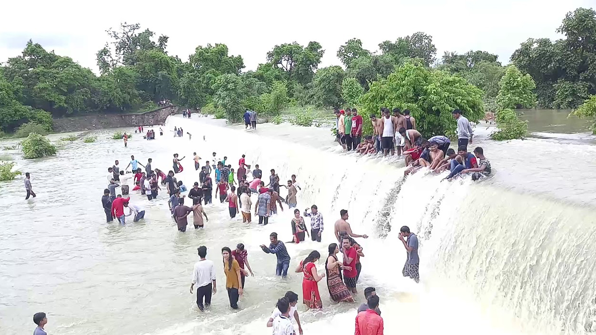

Asolamendha Dam
Asolamendha Dam
Asolamendha Dam, is an earthfill dam on local river near Pathri(Saoli taluka), Chandrapur district in state of Maharashtra in India.The height of the dam above lowest foundation is while the length is . The volume content is and gross storage capacity is .
About

Official Designation of Asolamendha Dam Irrigation Project is " Asolamendha Dam , D - 01003 " . However local and popular name is " Asolamendha Lake / Asolamendha Talav ". Asolamendha Dam was constructed as part of Irrigation Projects by the Britishers during the British Raj in the Year 1918. . It is built on and impounds Pothari River . Nearest city to dam is Shindewadi in Chandrapur District of Maharashtra . The dam is an Earth fill Dam .